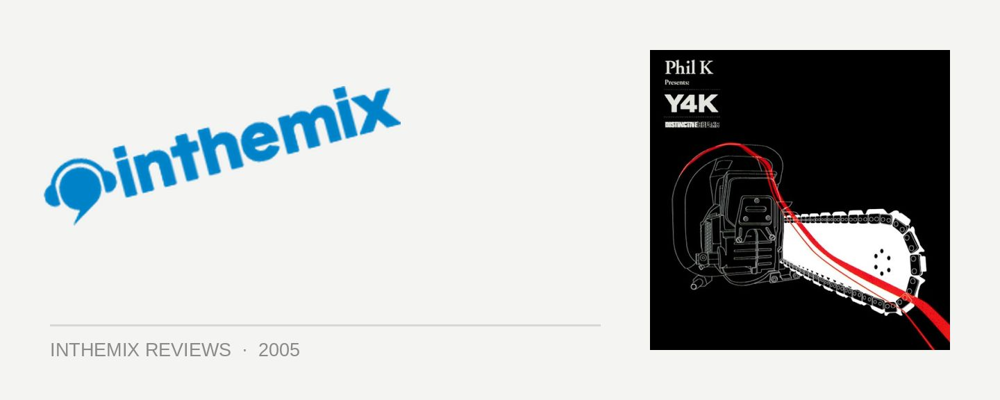

Various Artists - Phil K pres. Y4K
(Distinctive Breaks/DMC)
The concept of the cyborg holds a hallowed place in science-fiction culture. Concerned with the meeting of man and machine to the degree that the boundaries begin to blur, Australia’s Phil K certainly fits the description. Spruced-up analogue decks, CDJ-1000s, VDJ-10,000s – you name it, Phil K is plugged into it. The Melbourne technology sage is taking the reigns for the latest instalment of Y4K, giving him the opportunity to work his enormous technical skills in all things dance music – and if we’re lucky, maybe even treat his fans to a tasty selection of the latest nu-school breaks as well.
Phil K has earnt a rep of being on the very knife’s edge of the latest happenings, and deservedly so – the production on his Y4K CD is enough to blow the fuses of an artificially created mind. But the feeling quickly creeps in that you’d need to have electrical wires plugged into the back of your neck to enjoy the sort of music he’s dishing up. Measured, lumbering and more than a little tripped out, it has all the plodding slowness of progressive house – just with a broken beat behind the synthetic rhythms. It’s like Phil decided to take the listeners deep, deep down, and then forgot to surface again for air.
It’s so slow and progressive that frankly, it’ll give some people the shits. Phil K’s technical abilities don’t preclude the fact that, for the most part, these aren’t the sorts of breaks that would go down well in a club. The temptation is there to write off Phil K as a self-indulgent prog head, but then the fluid smoothness of it all takes over. It washes over the listener efficiently like a sea of silicon, only to put them increasingly on edge as Phil gradually cranks the wheel and unleashes some sinister driving beats.
While the reigns are never fully loosened, the stakes are certainly raised with the heavy, sinister bass of Phil’s own co-production Cloudbreak, and the slammin’ nastiness of Devil’s Logic. Accessible? Maybe not, but the way the technology is used by artists like NuBreed, Product.01 and Andy Page is truly gob smacking. And then there’s robot-man Phil doing some freakin’ amazing stuff with the FX and samplers, fiddling around with the knobs and dials from go to woah.
Aside from the patriotic pride associated with seeing a top Aussie like Phil K at the helm of a series as esteemed as Y4K, his latest offering is going to be classed as a disappointment for some. Phil has a real passion for his music and loads of integrity, but those who like their breaks with a little bit of filtered funk will be left out in the cold. It’s technically proficient, but what does that mean if it doesn’t make you wanna boogie? But for lovers of Phil K at his dirtiest and darkest, dive right in cause you’ll love it. The sound is cutting edge and drenched in technology, the mixing beautifully smooth and masterfully layered. Just remember though, meeting a bad-ass cyborg like Phil K in a dark alley may be ill advised.